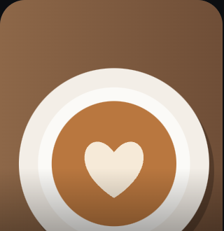
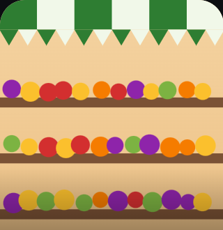
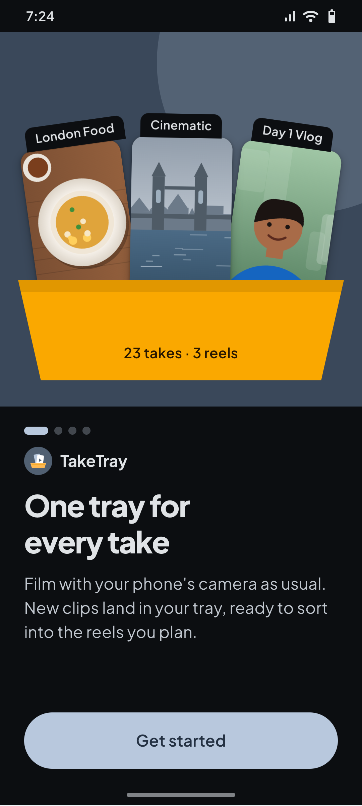
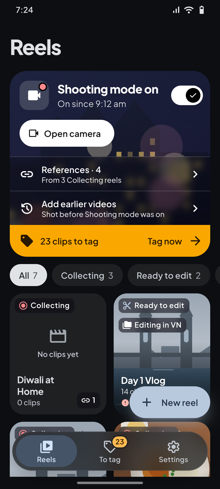
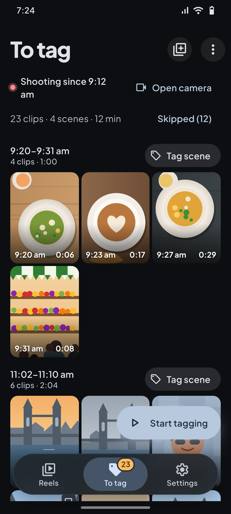
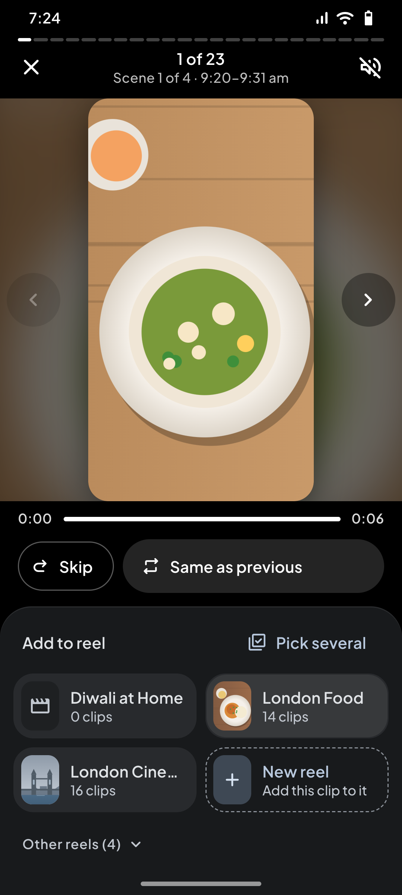
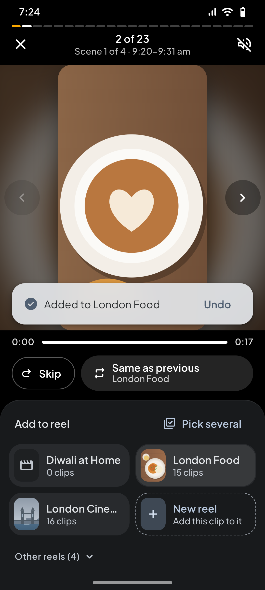
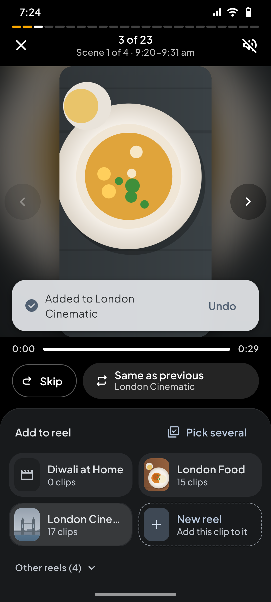

An Android app for
short-form creators.
New videos land in To tag.
Shot less than 10 minutes apart? Same scene.
Wrong one? Undo.
Flutter · Riverpod · Drift (SQLite) · Offline-first
Android app · Personal project · In development
Music: Sascha Ende, ende.app (CC BY 4.0)